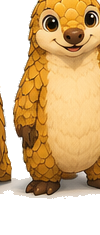

Muchos fallos en impresión 3D ocurren incluso antes de que la máquina comience a trabajar. Un archivo STL mal preparado puede causar desde errores de impresión hasta desperdicio completo de material. Por eso, en 3DSnapTech validamos cada archivo que recibimos — es parte del proceso que garantiza resultados profesionales.
¿Qué es un archivo STL?
STL (Stereolithography) es el formato estándar en impresión 3D. Representa la geometría de un objeto usando triángulos: entre más pequeños sean, más precisión tendrá el modelo. Todos los softwares de impresión (Cura, Bambu Studio, PrusaSlicer) trabajan con STL.
Paso 1: Descarga y validación inicial
¿De dónde descargar modelos STL?
Plataformas confiables: Thingiverse, Printables, MyMiniFactory. Siempre lee los comentarios y revisa qué grado de dificultad tiene el modelo.
Una vez descargues tu STL, abre un software de validación gratuito como Fusion 360 (versión gratuita) o Meshmixer de Autodesk. Busca:
- ✓ Errores topológicos: orificios, triángulos mal orientados, superficies rotas
- ✓ Orientación de normales: todas las caras deben apuntar hacia afuera
- ✓ Agujeros y grietas: causarán problemas de slicing
Paso 2: Orientación y posicionamiento
¿Cómo orientar la pieza?
La orientación define velocidad de impresión, calidad y cantidad de soportes necesarios. No hay regla única — depende de tu pieza.
Reglas generales:
- 🎯 Eje Z mínimo: orienta la pieza para que tenga menos altura posible (menos capas = menos tiempo)
- 🎯 Superficies críticas: si una cara necesita acabado perfecto, colócala paralela a la base
- 🎯 Evita voladizos: ajusta el ángulo para minimizar partes que "cuelguen" (necesitarían soportes)
- 🎯 Distribución de peso: balancea la pieza para estabilidad (especialmente en capas iniciales)
Paso 3: Soportes (si son necesarios)
¿Necesitas soportes?
Los soportes sostienen partes que "vuelan" en el aire. Se quitan después, pero consumen material y tiempo.
Cuándo usar soportes:
- Ángulos de voladizo mayores a 45° (sin soportes, fallarían)
- Agujeros pequeños que atraviesan completamente (se rellenarían sin soportes internos)
- Superficies planas amplias que necesitan anclaje
Tipos de soportes más comunes:
- Soportes automáticos del software: Bambu Studio, Cura y PrusaSlicer generan soportes inteligentes. Casi siempre funciona bien.
- Soportes manuales: en Fusion 360 o Meshmixer, diseña tus propios soportes para máximo control (avanzado).
Paso 4: Escala y dimensiones
Verifica el tamaño
A veces los modelos vienen en unidades incorrectas (pulgadas en lugar de milímetros o viceversa).
En tu software de slicing, confirma:
- Dimensiones finales en mm (ancho × largo × alto)
- Que quepa en la cama de tu impresora (Ender 3: 220×220×250 mm, Bambu P1S: 256×256×260 mm)
- Grosor de paredes: mínimo 1.5mm para PLA, 2mm para PETG y ABS
Paso 5: Configuración en el slicer
Últimos ajustes antes de imprimir
Aquí es donde convertimos el STL en instrucciones para tu máquina.
Abre el archivo en tu software favorito (recomendamos Bambu Studio, PrusaSlicer o Cura) e ingresa:
Parámetros clave según el resultado que busques:
- 🎨 Calidad máxima: altura 0.1mm, velocidad 30 mm/s, infill 20% (toma ~4x más tiempo)
- ⚡ Velocidad máxima: altura 0.3mm, velocidad 150+ mm/s, infill 10% (rápido pero menos bonito)
- ⚙️ Balance (recomendado): altura 0.2mm, velocidad 60 mm/s, infill 20%
Paso 6: Previsualización y validación final
Antes de enviar a imprimir
Casi estamos. Una última revisión visual evita surpresas desagradables.
Todo software de slicing permite ver una vista por capas. Revisa:
- ✓ Primera capa: toca toda la cama, sin espacios
- ✓ Capas intermedias: sin huecos ni irregularidades sospechosas
- ✓ Soportes: están donde deben estar, no invaden espacios críticos
- ✓ Tiempo y peso de filamento: coinciden con tus expectativas
Si algo se ve mal, ajusta parámetros y regenera. Es mejor perder 5 minutos aquí que 8 horas imprimiendo algo defectuoso.
Troubleshooting rápido
- El STL no se abre: probablemente está corrupto. Descárgalo nuevamente o úsalo en otro sitio.
- El archivo es enormemente grande: tiene demasiadas caras/triángulos. Usa decimation en Meshmixer para simplificar.
- Aparecen agujeros en la vista: reparación automática. Usa "Fix" en Bambu Studio o sube a NetFabb.
- Soportes cubren todo: reorienta 45° y regenera. Si persiste, diseña soportes manuales.
Conclusión
Preparar correctamente un archivo STL es la diferencia entre una impresión sin problemas y un fracaso. Los 20 minutos que inviertes validando, orientando y configurando pueden ahorrarte horas de impresión fallida.
En 3DSnapTech, este es exactamente el proceso que seguimos con cada proyecto que nos encargan. Si tienes un modelo y no estás seguro, envíalo — te diremos si está listo o qué ajustes necesita.

¿Tu archivo está listo?
Prepáralo con esta guía y envíalo por WhatsApp para que lo revises antes de imprimir.